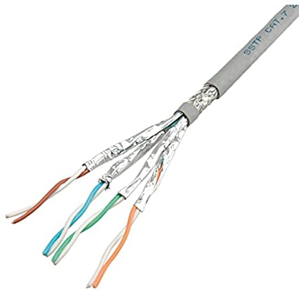

Il cavo Cat7
Il cavo Cat7 è un tipo di cavo di rete utilizzato per trasmettere segnali Ethernet ad altissima velocità. La sigla "Cat" sta per "Categoria", e il numero "7" indica la versione del cavo secondo gli standard TIA/EIA-568. Il cavo Cat7 utilizza quattro coppie di fili in rame intrecciati e schermati come il cavo Cat6, ma ha una maggiore capacità di trasmissione dati grazie all'utilizzo di due schermature separate (S/FTP), ovvero uno schermo individuale per ogni coppia di fili e una schermatura generale esterna. Il cavo Cat7 può trasmettere dati a velocità fino a 10 gigabit al secondo (Gbps) su distanze fino a 100 metri. Inoltre, il cavo Cat7 supporta anche la trasmissione di dati a velocità di 40 Gbps fino a una distanza di 50 metri. Il cavo Cat7 è utilizzato comunemente in ambienti di rete professionali ad alta velocità come data center, server farm e applicazioni di trasmissione video ad alta definizione.
